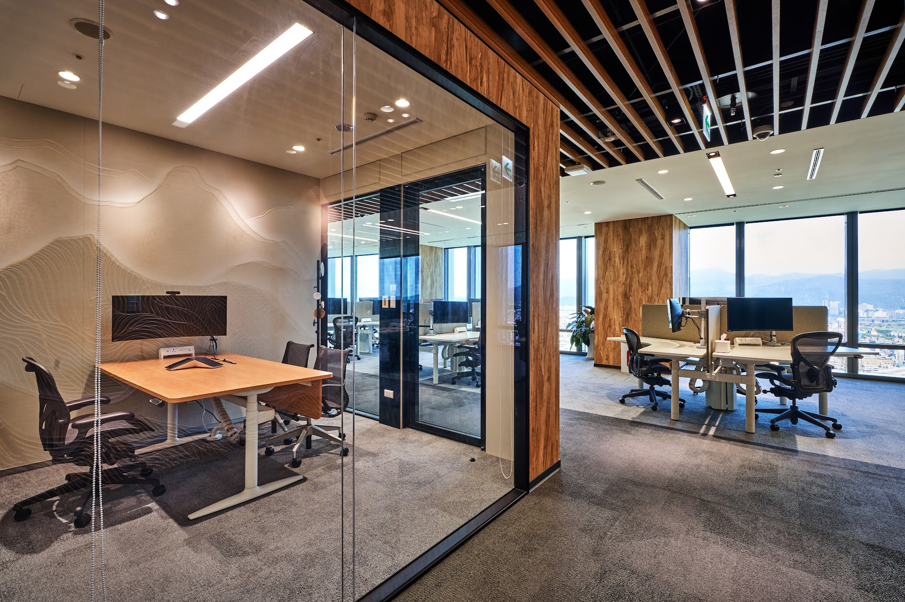

一個具備「未來擴充性」的頂級隔音玻璃隔間系統。這不是單純的隔間工程，而是一項保有最大彈性的戰略投資。用單層玻璃隔間的預算，為您的企業買入頂級雙層隔音玻璃隔間系統的擴充 DNA。
索取 ilac-MRA 測試報告與詳細規格我們的使命：隔音是員工幸福，不應是奢侈品
我們深信，優質的隔音環境直接攸關 員工幸福感 與 企業生產力。過去六年，作為 JEB 在台灣的獨家代理商，我們累積了深厚的技術 Know-how。現在，我們決定發起一場革命，去除昂貴的品牌溢價，讓本地客戶也能負擔起世界級的隔音品質。

聲音是物理學，不應靠品牌包裝來定義。TRL 堅持以科學實證說話：
RW 與 STC 差異說明：RW 與 STC 屬於不同評估標準，兩者權重曲線與頻帶定義不同。RW 在低頻噪音與人聲頻段的隔絕評估更貼近辦公室情境；在實務上，相近數值下 RW 的主觀隔音感受常可多出約 2 至 3 dB。
我們成功優化供應鏈與施工流程，將雙層隔音玻璃門的門檻大幅降低。
| 比較項目 | 市場品牌行情 | TRL 獨家代理方案 |
|---|---|---|
| 雙層隔音門售價 | $100,000+（高溢價） | $40,000 不到（合理成本） |
| 品質標準 | 品牌光環為主 | ILAC-MRA 實驗室實測 |
| 目標對象 | 僅限大型外商 | 所有重視效率的本地企業 |
您不再需要為了省錢而犧牲安靜，也不必為了安靜而支付天價。TRL 讓您用不到一半的預算，就能為團隊創造如同 Google 辦公室般的專注環境。
「如果您的預算目前仍不足，眼前只能先做 單層玻璃牆、門片先採 木門，我們也已為您預備可升級方案。先用單層預算建置 可擴充骨架，未來只需更換關鍵零件，即可升級為雙層隔音玻璃牆與高性能隔音門。」
一般廠商的單層隔間，極限就是單層。我們提供的是「雙層系統的降規使用」。第一天就給足 108mm 門框深度、高承重五金鉸鏈與雙層氣密膠條。將初期投入轉化為未來可無限升級的底層架構。
捨棄品牌迷思，與國際一線品牌平起平坐的通話幣。全面附上 ilac-MRA 國際認證第三方聲學實驗室報告 (RW43dB~RW46)，保證您獲得的是全球頂級標準的聲學防護力。
徹底解決 FM 的維護痛點。首創「快拆式設備帶」與無需拆除原主結構設計。未來升級隔音、木門換玻璃門、或維修會議預約面板，皆採模組化抽換。零粉塵、無噪音、不封閉動線。
歷經 6 年研發，專為永續而生。當未來需求改變（如單層升雙層），我們承諾 零拆除、零廢棄物。大幅延長資產壽命，最佳化未來的 CAPEX（資本支出），完美對接企業的綠色承諾。
| 評估維度 (FM 考量點) | 傳統隔間工程 | 我們的未來擴充系統 (Future-Proof System) |
|---|---|---|
| 初期投資效益 (ROI) | 買單層僅獲單層極限，無擴充彈性。 |
單層預算，獲雙層系統規格（深門框、高承重五金、雙層氣密）。
|
| 聲學標準 (Acoustics) | 多依賴品牌名氣，缺乏第三方實測。 |
提供 ilac-MRA 國際級實驗室認證，確實驗證 STC40dB 效能。
|
| 維護與營運 (Business Continuity) |
需破壞性施工，產生粉塵噪音，封閉辦公動線。
|
快拆式設備帶、模組化抽換。營運零中斷，打造無痛售後服務。
|
| ESG 與資產延壽 (Sustainability) |
升級需拆除重做，產生大量營建廢棄物。
|
零拆除、零廢棄物升級。完美符合外商企業 ESG 減碳與資產最佳化。
|